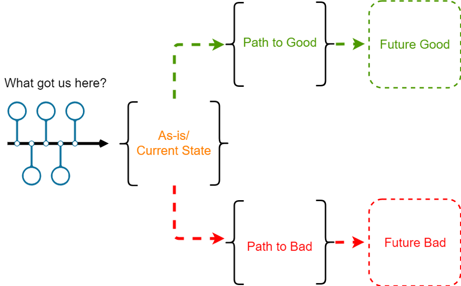

Learning path
If you spend 12 weeks on one topic, that is both a lot of time and very little time. This learning path contains
-
A guide to take you through your learning journey for 12 weeks (Weeklys5), with food for thought, tips and key guiding questions.
-
18 katas6 (exercises) to help you get the best out of yourself and your (Learning)Circle7
-
Further reading and links to deepen or continue your learning journey
How is this learning path structured?
The learning path is suitable for both beginners and advanced learners. In this guide you will first find the instructions for the 12-week learning journey. This is followed by the list of exercises, the Kata Log. Under \"Resources\" we have compiled valuable references to literature, videos and other sources for you. There is also a glossary that explains the jargon used.
How do you deal with the learning path?
Before starting the learning journey (Sprint8), take time to look at the structure and the individual katas in more detail. Sometimes there are several katas in a week. Choose one or do both, depending on your mood. There is no kata police: feel free to swap or modify katas to better suit your goals. (see lernOS guide)
How can you learn with others who are interested?
Want to get started with your learning path, but would like to start in a group? If you are on social networks like Facebook, Instagram or Twitter, ask for other interested people in a post there. You can also use the hashtags #lernOS and #diversityandInclusion or #Diversitymatters.
You can tag the authors of the guide so that your post can be seen and forwarded more easily.
Organise the Circle
ProTip: In many cases, the time for doing the exercises in the weekly is too short. We therefore recommend the flipped classroom method. For each weekly, there is a kata that each Circle member prepares as \"homework\", so that there is more time in the weekly to discuss the results. This is accompanied by guiding questions that can be added. And every now and then there are also katas that are completed together during the weekly.
In the Circle you also choose your own focus for the sprint - what do you want to learn or deepen? Where do you stand? What is challenging? What\'s on the agenda right now and where do you go from there? What would be more of a focus for another sprint? How do you want to proceed? \"Everything at once and then perfectly\" (with excessive demands/frustration) or rather \"practice makes progress\" (Brandy Agerbeck) - practice brings progress (and fun).
Week 0: Pack your bags / Get in the mood to travel / Your motivation / Plan your sprint
Here we go! Your lernOS Diversity & Inclusion journey begins. Do you already know your fellow travellers? If not, today is the time to do so. You will see or hear your Circle partners at least once a week for the next 12 weeks. So use today\'s Circle to plan a few things together.
There are different travellers. Some start the lernOS trip trusting that the tour guide has done a good job and let the individual weeks unfold. Others want to know and understand the stage destinations. Depending on which type you belong to, look at the lernOS path and engage with it. Don\'t be discouraged if you can\'t make sense of all the weeks. The milestones build on each other and the individual katas are important for understanding the next steps.
A special feature of week 0: In the Circle you deal with the organisation and receive additional katas (exercises) for week 1. From the following week onwards you work exclusively on katas and can reduce the weekly time commitment.
As preparation
- Kata 0.1: lernOS Canvas
- Kata 0.2: Pack your suitcase
In the Weekly
- Check-in (approx. 10min)
Welcome, glad you joined! Think for a moment about why you joined a lernOS Circle. Was it a desire for more? A reaction to an event at work or in your life? Whether it is an aspiration or a reaction to something, take a moment now to write down your personal reasons and share this and more information about yourself with your Circle. Each Circle member introduces themselves in 5 minutes.
-
Exchange (approx. 40 min total)
-
Check-out (approx. 10 min)
What are your plans for next week?
The goal for next week\'s Weekly: develop a goal. But how do you do this? The following tool is available to you next week to sharpen your goal:
The lernOS canvas serves as a visual checklist and structure for your learning journey. It prevents blind spots and can be easily adapted through the use of sticky notes. It is best to discuss your completed lernOS canvas with one person before the next weekly. It is also a good idea to talk about the lernOS canvas if you have questions and are stuck.
Guiding questions:
-
Who are you? Introduce yourself. (5 min per member)
-
What made you choose this learning path for yourself?
Week 1: Where do you start?
This week is about laying the foundation for the next 12 weeks. Can you achieve everything you found out in the learning OS canvas at once, or does it make sense to identify partial goals? What do you want to have achieved on the topic of diversity by the end of the learning path? A tip: If this is your first learning journey, don\'t take on too much. Over the next 4 weeks, you will keep adjusting and refining your goal.
As preparation
- Kata 1: Where do you start?
In the Weekly
- Check-in (approx. 10 min)
How are you doing at the moment? What have you achieved since last week?
Quote: Paint a picture with your non-dominant hand to match your current mood.
Why? Learning ability, concentration and creativity are promoted.
- Exchange (approx. 40 min in total)
Feedback and tips on the katas (40 min)
- Check-out (approx. 10 min)
What are your plans for next week?
If your Circle has opted for the Flipped Classroom principle, work on the Kata from week 2 in the run-up to the next meeting.
If you are not yet familiar with Working Out Loud9 or lernOS, then plan a little extra time for you to be on the safe side.
Exchange: Your goals in the sprint (10 min per member)
- Share your goals from Kata 1 with the others.
Guiding questions:
-
Why are you doing this?
-
What inspires you about it ?
-
What does it mean for you to have achieved a goal?
-
How do you celebrate when you reach your goal?
<!-- -->
- Have you made an appointment with yourself in the calendar? What helped you to do this?
Week 2: Your goal in ten words or less
This week you will put your goal for the next twelve weeks through its paces. You will sharpen your focus on your goal with various exercises.
A tip: If you are doing a learning journey like this for the first time, don\'t take on too much. You will/can refine or change your goal in the coming weeks.
As preparation
- Kata 2: Your goal in ten words or less
In the Weekly
- Check-in (2 min per member)
What have you achieved since last week? What had you planned to do but could not achieve? What was the reason in each case?
- Exchange (40 min)
Feedback, and tips on the katas
Don\'t spare the applause if someone needs even less than seven words!
General advice: Don\'t be sparing with praise and appreciation ;-)
- Check-out
If you set yourself something last week that you couldn\'t achieve: What can you do to remove these obstacles for the coming week?
Who or what can help you with this?
If you have decided on the principle of Flipped Classroom in the Circle, then you will work on the Kata from week 3 in the run-up to the next meeting.
Week 3: Ready steady go?! Look at your experiences
It\'s slowly getting started: your own diversity learning journey. In the last two weeks, you have intensively considered why you are embarking on this journey and what goals you associate with lernOS. You have set yourself clear goals and thought about what you need to successfully master the learning journey.
This week will once again be about becoming aware of your own perspective on diversity. Where do you start your journey? What experiences do you bring with you?
You can use this week to reflect and examine yourself: Through which glasses do I look at the topic of diversity? And how does my environment look at the topic?
This way you can be sure that you have all the important aspects of your trip in mind. This week also offers you the opportunity to adjust the chosen itinerary or to add missing aspects. At least you are prepared for the following weeks.
As preparation
- Kata 3: Ready steady go?! Look at your experiences
In the Weekly
- Check-in (2 min per member)
What have you done since the last learning meeting? How confident are you with the objectives? Was there anything you stumbled over afterwards?
If so, share your experiences and thoughts with others if you like.
-
Exchange about the kata(s) (40 min)
-
Check-out
Plan the next appointment.
1. what will I take with me from today\'s round into next week?
2. what will I do until the next time?
3. do I need anything else from the round until the next appointment?
If you have decided on the principle of Flipped Classroom in the Circle, then you will work on the Kata from week 4 in the run-up to the next meeting.
Week 4: Look around and notice
When we think of diversity and inclusion, many of us first think of women or women\'s quotas or people with disabilities. But diversity has many more dimensions. Diversity also means diversity in terms of age or generations, ethnic origin and nationality, or sexual orientation or gender identity. Diversity can be visible, but also - at first glance - invisible. Social origin (which, incidentally, is also invisible) can also be significant. It is equally important to know that a single person combines many different dimensions.
A team in a company or in sport consists of individuals who in themselves cover several dimensions of diversity. And since these groups can be so diverse, it is all the more important to deal with this diversity competently - as a leader, as a company, as a club, community, etc. All offers should be designed in such a way that everyone feels addressed, accepted and supported.
It doesn\'t always have to say diversity to be diversity. So take a closer look. How committed is your environment to the topic of diversity and inclusion? The next exercises will help you to analyse exactly how your environment deals with the topic. You can find suggestions here: https://www.charta-der-vielfalt.de/
You will proceed in 3 phases.
Phase 1: Look around and notice! - Identifying internal and external factors
Phase 2: How diverse is your environment really?
Phase 3: Lead by example! - Learning from the others.
In phases 1 and 2, it is important not to go straight into the assessment or immediately derive measures. First of all, you should prepare everything in order to be able to establish the context and to get an overall picture later.
Surely it is also good if you have support and get to know the stakeholders in phase 2 who might be able to help you with the implementation.
Attempt to gather all the elements related to Diversity & Inclusion.
As preparation
- Kata 4: Look around and notice!
In the Weekly
- Check-in (2 min per member)
How are you and the others doing? How do you feel when you think about your learning processes and progress so far?
Is there anything that is still bothering you from the previous weeks of \"self-reflection\" that you would like to share with the group? - Does your goal still feel coherent? - Listen to each other and pay attention to what support someone needs.
- Exchange about the katas (25 min)
Share your results with the others in your learning circle. Use each other\'s results as inspiration for the next phases.
- Check-out
Plan the next appointment.
1. what will I take with me from today\'s round into next week?
2. what will I do until the next time?
3. do I need anything else from the round until the next appointment?
Week 5: How diverse is your environment really?
You have done a lot of research and gathering over the past week to set the context for Diversity & Inclusion in your setting.
This week you will learn to open your eyes to other personalities and their needs.
Dealing with diversity in everyday life in an appreciative way means that you take into account different characteristics and lifestyles within your target group. There can be quite a few of them! Have you ever asked yourself how you perceive diversity in your environment? Who/what is \"diverse\" or \"different\" for you and if so, why?
There are various aids for orientation. Here is an example:
In the course of scientific research on diversity & inclusion, 6 \"inner\" diversity dimensions have been established since the 1970s, which have been further developed over time. In our considerations, we start from the following 7 dimensions:
1. gender and gender identity
2. sexual orientation and identity
3. age and generation
4. ethnic origin and nationality
5. religion and world view
6. physical and mental abilities
7. social origin
As preparation
- Kata 5: How diverse is your environment really?
In the Weekly
- Check-in (2 min per member)
How are you doing? - Are you satisfied with your progress towards your goal? - And why? Don\'t worry if you are not yet satisfied with your goal or progress. This lernOS Diversity Learning Path is not about achieving your best performance or winning a competition. You may also find that over the course of the next few weeks, you work towards your actual diversity goal.
You are certainly already learning a lot through the regular exchange with the others. You should accept and value this for yourself.
-
Exchange (approx. 40 min)
-
Check out (5 min)
Plan the next appointment.
1. what will I take with me from today\'s round into next week?
2. what will I do until the next time?
3. do I need anything else from the round until the next appointment?
Week 6: Leading by example
Over the last two weeks, you have been intensively engaged in context-building on the topic of diversity and inclusion in your environment. On the one hand, you have looked at how your chosen environment is positioned on the topic. And you looked at how diverse your environment is.
In order to get more ideas and suggestions for the implementation of your goal and to find out what else you can do on the topic of Diversity & Inclusion in your environment, you will look outwards this week!
As preparation
- Kata 6: Lead by example.
In the Weekly
- Check-in (2 min per member)
What have you done since the last learning meeting?
Have you reflected on the 4-layers-of-diversity model for yourself? If so, would you like to share some of the invisible \"diversity\" with others?
- Exchange (approx. 40 min)
Share your results with the group
- Check-out (1 min per member)
Plan the next appointment.
1. what will I take with me from today\'s round into next week?
2. what will I do until the next time?
3. do I need anything else from the round until the next appointment?
Week 7: How good am I already?
Learning to think about diversity is a journey, but it is not the arrival that is important, but the journey. In the end, we never stop learning, and especially with this topic, it is very likely that the goal will never really be reached. Sometimes new goals also open up.
That\'s why you will have a stopover in week 7-9. You will take your time to see how far you have come or where you should definitely take a detour. In relation to your goal, this means learning to always think about diversity and inclusion. You should also be aware of how what you have learned may have been/will be influenced by your goal. What is currently preventing you or has prevented you in the past from achieving your goal?
Are you perhaps even ready to \"send a postcard\" to others and tell them about your journey? Whatever point you are at, in the next three weeks you will take your learning journey to another level and put it into a larger context. So very similar to the last three weeks, but now not related to your environment, but to your level of knowledge.
In the last few weeks you have taken a closer look at your environment. Now it\'s time to look at your own development.
Learning to think and internalise diversity always means taking steps in your own capacity to act. This week, the task is to learn to assess your own knowledge and capacity to act and to align both with your goal.
As preparation
- Kata 7: How good am I already?
In the Weekly
- Check-in: (2 min per member)
What has happened since last week? Do you focus on your learning goal, do you want to discuss or question your learning goal with the others, with the knowledge you have now?
- Exchange on Kata 7: How good am I already?
Share this with the group: Where would you classify yourself? How can you support each other?
- Check-out:
Plan the next appointment.
1. what will I take with me from today\'s round into next week?
2. what will I do until the next time?
3. do I need anything else from the round until the next appointment?
Week 8: Find your unconscious biases
You have already dealt extensively with your environment and the diversity in your environment. In addition, you have dealt with your knowledge and your ability to act and got to know the competence level model. In relation to the field of diversity management, you have probably also seen in the model that the journey is the destination.
This week we continue with self-reflection and an important field in diversity management: prejudices. We all have them. That\'s not the problem at first, because prejudices are supposed to help us find our way in a fast and complex world and make the \"right\" decisions quickly. But when we let our prejudices guide us, for example, in personnel decisions - in other words, when we act according to our prejudices - it becomes problematic. This is because we quickly and automatically classify people into certain groups on the basis of certain characteristics and just as automatically also attribute to them qualities that, although not observed, are almost instinctively associated with the respective group.
And we behave just as instinctively towards a person whom we have sorted into a drawer on the basis of certain characteristics and labelled with certain attributes.
As a result, we may not judge people according to their actual abilities. We overestimate or underestimate them and overlook valuable potential. We make assumptions without questioning them, for example about \"people with children\", \"people without children\", \"people with disabilities\", \"fathers on parental leave or part-time\", \"women in leadership\", \"older employees\".
Therefore, it is important to become aware of one\'s own prejudices, to question them and to adjust one\'s own actions accordingly.
As preparation
- Kata 8: Find your unconscious biases
In the Weekly
- Check-in (2 min per member)
First of all, think back to last week and note for yourself at which stage/stage of your learning and competence development you are currently? Has anything changed since last week or does your assessment from last week still feel correct? Record the assessment for yourself.
Share your assessment with the others.
- Exchange about Kata 8 (20 min)
Share your thoughts about the test in the group.
- Check-out (1 min per member)
Plan the next appointment.
1. what will I take with me from today\'s round into next week?
2. what will I do until the next time?
3. do I need anything else from the round until the next appointment?
In the next week you will apply what you have learned so far for the first time. You do not need any additional preparation time.
Week 9: Networking - Exchange - Positioning
Over the last two weeks you have been working hard on learning to think diversity. You may have noticed which steps you are still missing, which ones you have already taken and how your learning goal relates to them. This week should serve to reflect again. Compared to the first two weeks, today is less about theory and more about application.
As preparation
- Kata 9: Networking - Exchange - Positioning
In the Weekly
- Check-in (2 min per member)
How was the last week for you? Have you scanned your surroundings? Share with the group what you noticed. What was perhaps even different than usual?
- Exchange
Here in the group it would be a good exercise to try out an elevator pitch10. You can find the description in Kata 9 at the end.
- Check-out (1 min per member)
Plan your next learning time:
1. what will I take with me from today\'s learning time into next week?
2. what will I do until the next time?
Do I need an exchange with others? - With whom and until when?
Week 10: Plan the implementation of your goal
You have already achieved a lot! You have built up a picture of your environment, you know the first sources and networks and you are probably walking through the world with much more open eyes on the topic of diversity and inclusion.
Inclusion actually describes the action of making diversity usable. Inclusion thus means making diversity possible and to some extent self-evident. Inclusion creates environments in which all people are included. Everyone is treated fairly and with respect, has equal access to opportunities and resources and can be themselves.
In the next 3 weeks you will work more concretely on your goals and your desired results.
In addition, you will receive suggestions for concrete exercises and further links to support you.
But it will also be about leaving your comfort zone without overwhelming yourself or those around you.
As preparation
- Kata 10: Plan the implementation of your goal
In the Weekly
- Check-in (2 min per member)
What have you done since the last check-in?
What is particularly noteworthy from the last few weeks?
Is there anything that you are currently very preoccupied with that might prevent you from starting this last phase?
Who or what could support you?
- Exchange about Kata 10
Discuss your project with the group and get feedback.
- Check-out (1 min per member)
Plan the next appointment.
1. what will I take with me from today\'s round into next week?
2. what will I do until the next time?
3. do I need anything else from the round until the next appointment?
Week 11: Now get concrete
Once again, it is important to make it clear that this week is not about competition. No one expects top performance from you or your environment. Rather, you should simply take the next step, try out yourself and your environment and also learn beyond your Circle.
As preparation
- Kata 11: Now get concrete
In the Weekly
- Check-in (2 min per member)
How are you?
Are you satisfied with the implementation of your project?
Are there any reactions from your environment that you would like to share?
-
Exchange
-
Check-out (1 min per member)
Plan the next appointment.
1. what will I take with me from today\'s round into next week?
2. what will I do until the next time?
3. do I need anything else from the round until the next appointment?
Week 12: Reflection and conclusion
You have set out on your journey, but have you reached your destination? - What is the next step? - Is after the Circle before the Circle? - And when are you actually going to celebrate?
As preparation
- What\'s next? What do you plan to do next?
In the Weekly
-
Check-in (2 min per member)
-
Exchange
Wow, you did it and the sprint is complete. Congratulations!
This week there is no clearly defined programme with further exercises. Now is the time to end the learning journey together.
Talk to the others about the Circle and your experiences over the last few weeks. What have you learned and what has the learning path done to you?
What can happen after the common learning journey?
Some circles continue to meet regularly beyond the 12 weeks. During these meetings, certain topics from the learning path can be explored in more depth or other aspects can be worked on. Or ...
The members of your Circle probably have their own ideas about what you want to work on. Maybe you bring in ideas from your personal environment or your organisations and develop new projects from them.
Discuss with the others what you want to do in the weeks after the sprint. In any case, it is necessary to keep at it so that the knowledge and competences you have built up during the sprint are further consolidated.
Also discuss with them how you will continue to use the resources you have in common.
You\'ve done great things in the last few weeks - you should definitely celebrate that this week.
- Check-out (1min per member)
What are the next steps?
Are you planning joint activities beyond this time?
Do you have any plans together? (Possibly a next lernOS)
Kata log
Kata 0.1: lernOS Canvas
Thinking visually with the lernOS canvas (Kata)
A canvas is a visual structure that can be used to work on several areas in parallel. In this way, a canvas serves as a visual checklist. But it can also be used for telling complex stories. The idea originally came from Alex Osterwalder, who developed the Business Model Canvas. The lernOS Canvas has the same basic structure as the Business Model Canvas. But the names of the areas have been changed to fit the working themes of lernOS.
The lernOS canvas can be downloaded from the lernOS website in different formats (e.g. PowerPoint, PDF, PNG). To be able to work flexibly with the canvas, you should never write on it. This is why sticky notes were invented! (How to use the lern-OS-Canvas)

Graphical view of a canvas with division of the areas.
The upper part of the canvas contains a motivation or mission statement (under \"Purpose\", but only if you have one) and the number or date of the sprint. The \"My Goals & Key Results\" section documents the goals for the current Sprint. The areas \"My Roles\", \"My Activities\", \"My Projects\" and \"My Knowledge & Skills\" can be used to identify possible goals. The areas \"My Relationships\" and \"My Social Networks\" are used to identify people who can support in achieving the goals. Existing resources (e.g. documents, checklists, videos, etc.) are listed in \"My KnowledgeValues\". Valuable resources can be noted under \"My repositories\" to be generously shared with the network.
Kata 0.2: Pack your suitcase / Get in the mood for travelling / Your motivation
Kata for Group Travellers (Learning Circle)
-
A circle facilitator can be helpful to keep time management and to be disciplined about your goals and deadlines. Talk about it and decide whether you want to appoint someone and what tasks they will or will not take on.
-
Decide when, where and how you want to meet each week. Reserve 1 hour for each meeting.
-
Think about which tools you want to use for communication.
a. TEAMS, Skype, ZOOM
b. Whatsapp, Telegram
-
Discuss how you will communicate between appointments (Telegram, Whatsapp, email, etc.).
-
How do you want to share information, results?
-
Agree to work together under the motto: \"What happens in Vegas, stays in Vegas.\" This means that every Circle member can rely on the fact that anything that happens in the Circle will not be passed on.
Tip:
-
In many cases, there is not enough time to do the exercises in the weekly. Therefore, use the Flipped Classroom method: Each Circle member prepares the exercises as \"homework\" so that you have more time to discuss the results in the Weekly.
-
If you have a Circle facilitator, you may find it easier to manage your time and be disciplined about your goals and deadlines. You can take turns moderating if one of you does not want to take on this task alone. At the end of each week, decide who will take over the moderation next week.
-
Defines the day and time of the weekly meeting. It is recommended to set up a series of meetings for 15 - 18 weeks. If an appointment has to be cancelled, you can postpone the meeting accordingly. Discuss under which conditions you want to postpone an appointment.
Kata for solo travellers:
-
What can you do to make sure you stick to your study time?
-
Enter your study time in your calendar.
-
How do you organise your study time?
a. Where do you collect your results?
b. What are your primary working tools?
-
Draw a picture of your goal and hang it in a visible place in your home. Look at it and imagine how it feels to have achieved the goal.
-
Find supporters around you who can motivate you to persevere.
-
Think about what obstacles you might face in the next few weeks that would prevent you from sticking to the end of the Circle. Take appropriate countermeasures to overcome these obstacles.
Tip:
-
If you take one hour a week to work on the learning path, that will be enough. It is advisable to block off more than 13 dates at once. If you are unable to attend due to holidays or other reasons, your activities will be postponed for a week.
-
To make sure that you really take this time, you should already think about what your real disruptive factors could be and how you will deal with them in the coming weeks.
-
At the same time, it will not always be easy to motivate yourself. Here, too, the recommendation is to think about what you can do now if your motivation is not so high. Can you reward yourself with something for your discipline? Does it help if you talk to others about your progress or make it public in some other way, perhaps on Twitter or ESN?
Kata 1: Where do you start?
-
Where do you start your journey?
-
Think back to what you said last week. Why did you choose the lernOS Diversity & Inclusion Learning Pathway?
-
Self-reflection:
a. What is diversity for you?
b. Formulate 3 hashtags that best describe the topic for you.
c. In addition, research at least 3 definitions of \"Diversity & Inclusion\" on the internet and compare them with your hashtags. Are there any surprises here?
-
What do you want to achieve in the next 12 weeks? (see description below)
-
Who could support you in the next 12 weeks to reach your goal?
-
Create a list of relationships with 10-15 people who can help you achieve your goals. (see description below)
Tip
Ask yourself the following questions to check your goal:
1. is the goal really important to me?
2. can I achieve this in the next 12 weeks?
3. network to reach my goal in this time?
Make your goal measurable, e.g. according to the SMART11ruleor OKR12.
(see description following this table)
Set your goal for the next 12 weeks
In this kata you choose your target for the sprint. The target can be further refined up to week 4, but not after.
Exercise (25 min):
What do you want to achieve in the next twelve weeks? Choose a goal that is really, really important to you and that you can sprint towards. Keep in mind that your first priority is not to fully achieve your goal. The focus is on learning how to achieve goals more easily with the help of an open learning and working style and the development of a network.
My goals for the next 12 weeks
Choose a goal for the next 12 weeks. Be guided by the questions: \"Is it really, really important to me?\", \"Can I achieve it in 12 weeks?\" and \"Can my network help?\" to test whether the goal is suitable for the sprint. If you have trouble finding a good goal, think of goals related to your roles, activities or projects. If you want to help make the world a better place, you can also choose a goal from the United Nations\' 17 Sustainable Development Goals: https://17ziele.de/
Use the Objective & Key Results (OKR) method to define your objective more precisely. Write down your goal below. Define 2-4 key results per objective to help you monitor progress. You should be able to measure the key results on a scale of 0.0-1.0. To set ambitious goals, a completion rate of 0.7 is considered a success.
I want (goal): ...
measured by (key results):
1. ...
2. ...
3. ...
4. ...
Further information:
- Wikipedia article:SMARTCriteria
- MIT Sloan article: With Goals, FAST Beats SMART
- Ted Talk:How We Can Make the World a Better Place by 2030
- Video:How Google Sets Goals-OKRswithGoogle Ventures PartnerRickKlau
- Book: Introduction To OKRs, by Christina Wodtke, O\'Reilly Media Inc. 2016
- Book: The Beginner\'s Guide To OKR, by Felipe Castro
Make a list of at least ten people who are related to your goals. If you don\'t know the people by name, you can also put roles or descriptions on the list (e.g. \"Best* WoW player in town\", \"A good* cameraman*camerawoman\", \"Owner* of XY company\"). Use your contact lists or social networks to find more people:
1. ...
2. ...
3. ...
4. ...
5. ...
6. ...
7. ...
8. ...
9. ...
10. ...
Kata 2: Your goal in ten words or less
Do exercise 1 \"Future Backwards\" (see below for a detailed description).
-What does the result of the exercise mean to you?
-What happens if you don\'t reach your goal?
Do exercise 2: \"Your goal in ten words or less\".
Try to formulate your goal in ten words or less. Write it down. Use your learning OS Canvas to help you with this. Writing it down is important because it forces you to leave aside anything superfluous or distracting. In your mind or when speaking, you can often add restrictions or additions. Get to the point!
Tip:
The exercise \"Future Backwards\" is particularly suitable to be done in advance. This gives you more time to share the results with the group.
Try to formulate your goals in such a way that they are actually achievable. Choose small bites with focus.
Exercise 1: Design your \"Future Backwards\" (Kata)
Shape your future by reflecting on the present and the past and creating a personal vision. The FutureBackwards
Duration: 30 min
This kata is based on the method \"The Future Backwards\" by Dave Snowden. With the exercise you get a good view of your overall personal situation by looking into the past and possible futures. The perspective of the exercise can be short term (1-2 years), medium term (3-5 years) or long term (whole life).

Caption: The drawing represents six stations drawn in the form of a transverse ypsilon. They refer to a positive or negative future, starting from the current status quo.
Instructions:
-
Prepare your Future Backwards Canvas. In the simplest case, this can be a sheet of paper in landscape format with a \"Y\" turned 90 degrees to the right. The Y represents the current state, the past, the vision (heaven), the anti-vision (hell) and the stairway to heaven. Define the time span in which you want to look into the past and future (short/medium/long term) (5 min)
-
Describe your current situation in 3-5 short sentences (5 min)
-
Describe the 3-5 key events in the past that have led to the current situation (5 min)
-
Describe your vision in 3-5 short sentences (5 min)
-
Describe your anti-vision in 3-5 short sentences (5 min)
-
Describe the 3-5 key activities or projects that will make your vision a reality and prevent the anti-vision. Go backwards: from the vision or anti-vision to the current situation. (5 min)
Kata 3: Ready steady go?! Look at your experiences
In week 3, the focus is again on self-reflection and getting to know each other. What brought you on this learning journey?
Think about your initial answer again. What guided you - personal encounters, experiences or even your own concern? Perhaps there is no specific trigger, but simply curiosity about the topic.
Studies show that our experiences and our self-image, among other things, have a strong influence on how we look at the world. Therefore, an active examination of our self-image and the \"drawers\" in our heads is indispensable. Only in this way can we recognise which perspective we may be hiding. We pay more attention to information that fits into our own scheme of things. This week should help you to get to know yourself from a different perspective.
Conduct an Implicit Association Test. The IAT is a psychological test that can reveal unspoken attitudes and prejudices. There are different tests for the different diversity dimensions.
For this learning journey please choose from
https://implicit.harvard.edu/implicit/selectatest.html
select and perform one of the following three tests:
-Race IAT
-Age IAT
-Gender - Career IAT
How are you doing with the result? What did you learn about yourself?
Rest assured that the IAT is not a final judgement about you. Rather, it is an assessment of where you stand and uncovers many unknowns.
If you like, exchange with someone from your relationship list or learning circle. But this is not compulsory. Because the results are very personal.
Alternatively, you can also carry out a small location assessment. Ask yourself the following questions:
(1) What is your initial attitude towards diversity?
(2) What attitudes do you encounter in your environment, e.g. in your organisation?
The following exemplary typology may be helpful - but you are also welcome to develop and describe your own types:
Type \"sceptic\": fundamental rejection of diversity and scepticism about the entrepreneurial/societal advantage; perhaps even disappointed and tired due to negative experience in the implementation of diversity.
Pragmatist\" type: an inward-looking view of diversity and primarily interested in the cost-benefit ratio; pragmatists like to measure existing performance indicators.
Communicator\" type: primarily concerned with external impact and oriented towards external target groups and stakeholders; diversity is a bridge between the organisation and the world.
Type \"strategist\": comprehensive view of diversity with the aim of developing a prejudice-free and open organisational culture in which creativity and innovation are promoted; social responsibility as the most important driver.
Tip:
In week 8 you will have the opportunity to do the IAT again. If you did not talk about the results of your IAT this time, you can also use week 8 for sharing and possibly discussing if something has changed during the learning journey and if you have moved away from your starting point.
The first stage of the journey was entitled self-reflection. The next stage of the journey is dedicated to context. This is a good time to take out the lernOS canvas again and see how your journey has gone so far. Do you need to make any adjustments?
Kata 4: Look around and notice!
In week 4, you will go in search of clues. You will look at how the topic of diversity and inclusion is anchored in your environment. But first you should decide which environment you want to look at.
Which environment do you want to investigate exactly? - To avoid getting bogged down, you should first decide on an area. This can be your team, your department, the organisation, your children\'s school or the club in which you are active. It is certainly helpful if the environment has something to do with your goal or if you can use your findings to achieve your goal.
Next, you start with the research. Tools for this can be either a brown paper14 or a digital tool such as mind mapping15. Use whatever supports you in this kind of work.
Don\'t take on too much. Decide at the beginning how many or which elements you would like to look at specifically in the interior review. Here are a few examples or possibilities for your first check:
- the social intranet
-div . communication elements such as brochures, flyers, advertisements
- the definition of diversity & inclusion
-Leadership Principles
-Employee Guidelines
-Vision , Mission, Values, Corporate Culture
-Management Manual
-memberships or internal or external involvement
-internal / external training offers
- Structural and spatial measures, etc.
What have you found?
What haven\'t you found?
Which questions remained unanswered and still need to be clarified in the course of the week?
Kata 5: How diverse is your environment really?
Observe your surroundings and ask yourself the question:
How pronounced do you perceive the diversity dimension(s) in your environment?
You may also find facts and figures on the internet or intranet. Alternatively, you can look in annual reports or sustainability reports.
Maybe you can also find people from your environment who you can ask about this. Of course, you can also make your own assessment. You don\'t have to research all the dimensions, just take the ones that are most relevant to you.
It is important that it is not an evaluation in the sense of \"good and bad\", but first of all an expression of your perception.
What insights do you draw from your results?
Tip:
Use the \"4-layers-of-Diversity\" model (see below) or another tool as a basis if it helps you to orientate yourself.
Final thought:
If you look at the \"4-layers-of-diversity\" model: What makes up your personality? And what is visible to others and what is not? How similar is your environment to you in your individual characteristics?
Links and source:
-
The authors Gardenswartz and Rowe, for example, have developed the > model of the \"4 layers of Diversity\" - also known as the > diversity > wheel. > Here, the internal diversity dimensions are expanded to include > external dimensions such as income, work experience or marital > status, as well as organisational dimensions such as place of > work, department, length of affiliation, etc. The core dimensions > were developed at the National Training Laboratories Institute for > Applied Behaviour Science. The core dimensions were developed at > the National Training Laboratories Institute for Applied > Behavioural Science in Bethel in the USA. They have been adapted > and expanded over time. They are all based on 7 core dimensions. > It is also important to know that the inner core dimensions are > the least changeable. At the same time, these dimensions most > often lead to exclusion mechanisms.
Kata 6: Leading by example
There are now many great and concrete examples of diversity approaches in companies. The activities and programmes are almost as diverse as the target groups they address.
Diversity management measures range from person-related programmes and measures such as an internship programme for refugees to behaviour-related measures such as a management seminar on intercultural management.
Look for positive examples of actions, campaigns or programmes outside and within your chosen environment.
Why do you like the measure?
What do you take away from your research for your goal? - Does it change anything else about your goal?
What could you transfer from that to your environment?
How could you make that happen?
Links and source:
- https://www.charta-der-vielfalt.de/diversity-verstehen-leben/best-practice/zeige/diversity-parcours/
Kata 7: How good am I already?
Building knowledge does not work in one step, but in several. When you start a learning journey, you move forward in stages. Every now and then you take a step back, sometimes you take the next step but one before the next.
But you always strive to become more knowledgeable and thus more capable of acting in relation to the topic and your goal, and ultimately to apply what you have learned unconsciously over time.
Revisit your goal and ask yourself how your goal definition might have been/is influenced by your own assumptions about diversity and inclusion?
How capable of action do you consider yourself to be in the meantime, and would you formulate your goal in the same way as at the beginning?
To become aware of the process of \"becoming competent\" in relation to your goal, look at the competence level model and think about what steps you can take next. What level are you at?
Competence level model

Caption: Drawing with 4 stages of competence development: 1. unconscious incompetence, 2. conscious incompetence, 3. conscious competence, 4. unconscious competence (internalisation).
https://de.wikipedia.org/wiki/Kompetenzstufenentwicklung
Scientific article: Developing Diversity Competence in: Developing Diversity Competence Chapter Author(s): Frank Linde and Nicole Auferkorte-Michaelis Book Title: Learning and teaching diversity - a university bookBook Editor(s): Nicole Auferkorte-Michaelis and Frank Linde Published by: Verlag Barbara Budrich
https://www.pedocs.de/volltexte/2018/15847/pdf/Budrich_9783847410676_Profile_ISOPDFA-1_LevelB.pdf
Kata 8: Find your unconscious biases
We are not always aware of our prejudices. That is why we call them unconscious bias or implicit association.
It is therefore important to keep questioning yourself. One way to become aware of these prejudices or assumptions is to take the Harvard University Implicit Association Test:
https://implicit.harvard.eDu/implicit/germany/selectatest.jsp
This test should look familiar. You have already encountered it at the beginning of your learning journey in week 3, Kata 3. If you have already done it in Kata 3, it is best to choose the same topic again. Reflect on how the test felt different this time. Did it produce different results, or did you do better? And can you relate the result to your competence level assessment?
Select a dimension and perform the test.
Then answer these questions:
-Did I expect the result?
-How does the result feel? Neutral, disappointing, satisfactory? ...
-Have you become more aware of your unconscious assumptions?
Important: The test can be daunting. When we deal with diversity, we believe that we are already very diversity-aware and prejudice-aware. It is possible that the test has made you realise that you have prejudices that you have almost no control over. It is this realisation that is important.
As already described at the beginning: We all have prejudices, that is not yet the \"problem\". It only becomes a problem when we base our actions on our prejudices, our unconscious assumptions. The test can show us that we are prejudiced, that this prejudice is obviously deep inside us and has been learned. In the next step, it is important that we also recognise this bias in real life and make an effort not to let it guide us.
Until next time, try to notice your prejudices in everyday life and scan your behaviour.
Tip:
Would you like to know what exactly you can do \"against\" unconscious prejudices? Here you will find suggestions and information:
Inclusion Nudges - How you can trigger diversity-aware decisions: https://www.anti-bias.eu/anti-bias-strategien/nudges-beispiele/inclusion-nudges/
\"Recognising diversity - strategies for dealing sensitively with unconscious prejudice\" Charta der Vielfalt e.V.: https://www.charta-der-vielfalt.de/fileadmin/user_upload/Studien_Publikationen_Charta/Vielfalt_erkennen_BF.pdf
\"Vorurteile im Arbeitsleben - Unconscious Bias erkennen, vermeiden und abbauen\" SpringerGabler, Eds. : Domsch, Michel E., Ladwig, Dsire H., Weber, Florian C.
Kata 9: Networking - Exchange - Positioning
A good way to check what you have learned and your own competence is to go into an exchange. There are several ways to do this. In this kata, you should choose one or more options for exchange:
-
Posting via social media (Twitter, LinkedIN, XING, Facebook, etc.)
-
Blogposting
-
Exchange/discussion with family, acquaintances, friends
-
Elevator Pitch (see information under Tips)
-
Events on the topic
-
Networking (founding, finding and expanding networks)
Also look again at your learning goal and think about how this exercise can help you on the way.
Tips:
Info on the Elevator Pitch:
https://karrierebibel.de/elevator-pitch/
Want to do more? Look outside the box, check social media for people who are pushing diversity & inclusion, blogging, posting, tweeting, etc.
You can also find events on this topic via social media or on the websites of the relevant organisations: https://www.charta-der-vielfalt.de/ueber-uns/aktuelles/veranstaltungen/
Kata 10: Plan the implementation of your goal
You have learned and experienced so much in the last few weeks. Take a look at all your findings and results.
Look at everything again in peace.
-
Self-reflection: Canvas and Future Backwards
-
Establish context: Your research results
-
Learning experiences
Answer the following questions:
What do you still need to achieve your goal?
What are the next steps?
What would take you further on the way to your goal?
Can you implement your project alone or do you need support?
What is to be done concretely until the end of the learning journey?
Plan and describe your next steps and put enough time in your calendar for implementation. This kata will be repeated next week.
Tips and more:
Only take on so much that you can easily implement it in the course of the next week. Allow enough time for this. Examples could be:
-
A blog post in ESN16 or on an external platform.
-
A small workshop/conversation with others around you to raise awareness.
Literature:
-
Charta der Vielfalt (2014): Vielfalt erkennen - Strategien fr einen sensiblen Umgang mit unbewussten Vorurteilen. Charta der Vielfalt e.V.: Berlin
-
Pauser, Norbert; Wondrak, Manfred, Wondrak (eds.) (2011): Praxisbuch Diversity Management. Facultas Verlag: Vienna
-
Wondrak, Manfred (2014): Was bringt Diversity Management? Diversity Impact Measurement - Challenges and (First) Solutions. In: Diversity Management in CEE: Challenges and Opportunities for Innovation and Growth. Info Europa 5/2014. Institute for the Danube Region and Central Europe: Vienna.
Kata 11: Now get concrete
Take your plan from last week and start implementing it. Maybe you can\'t do today\'s kata in one step. In that case, schedule some more time in the short term with the aim of finishing by next week.
Closing
You did it and you can be proud of yourself. Celebrate your successful week and share your experience with others so that they too may be inspired by the idea of going through a learning path.